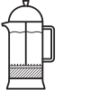

Kaffen
Vi har ikke nogen månedens kaffeblanding, og ingen kaffebønner der er kommet den forkerte vej ud en væsel. Til gengæld har vi tilsammen 20 års erfaring med danskernes kaffesmag, og har nogle få udvalgte blends som vi ved er sikre vindere – Altid økologisk og Fairtrade selvfølgelig. Læs mere om kaffen her
